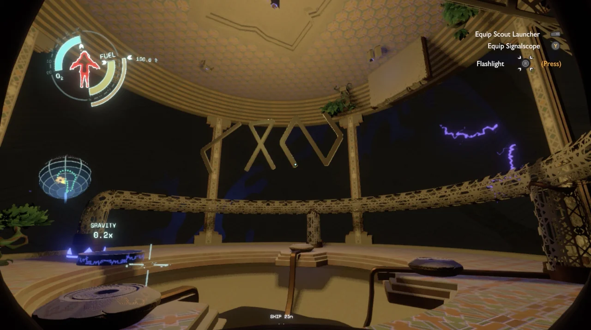

O Profundezas do Gigante (Giant's Deep) é um planeta oceânico com uma espessa camada gasosa. Dentro, o clima é turbulento e a atmosfera densa, com ciclones massivos que se movimentam pelo planeta. A gravidade é forte e há uma forte correnteza no fundo do oceano, impedindo o jogador de acessar o núcleo. Há um satélite artificial que orbita o planeta.
O satélite do Profundezas do Gigante arremessa uma sonda em uma direção aleatória no começo de todo loop. Isso acontece pois o satélite está vinculado ao Projeto do Gêmeo Cinzento, permitindo não repetir trajetória e informar o projeto quando encontrar o Olho do Universo.
No núcleo do planeta se encontra a sala de controle do satélite, onde é possível encontrar as coordenadas do Olho do Universo.